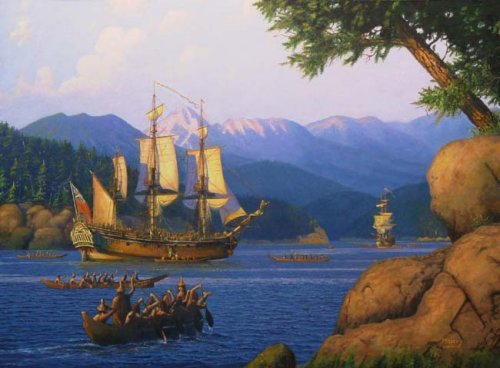
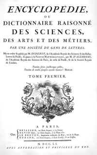
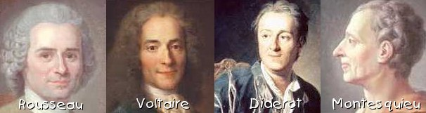
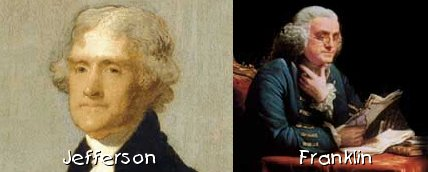

|
The Age of Enlightenment corresponds to the 18th century in Europe, even
though its start is considered to be the English Revolution of 1688.
The intellectual and cultural renewal movement of the
Lumières
spread
through much of Europe,
especially northern Europe and France,
as well as the United States.
In England,
it is known as the Enlightenment,
and in Germany
as the Aufklärung.

In the Age of Enlightenment, we see a revolution in thought,
an upheaval of the material environment, and an explosion of
wealth, trade and travel. The 18th century enters the consumer society. The motto
"dare to think for yourself" proclaims the emancipation of humankind
through knowledge.

THE WINDS OF THE ENLIGHTENMENT BLOW
IN CANADA TOO, BUT THEY COME
FROM ENGLAND The Conquest of 1760 opened the St. Lawrence to the
English society of the British Isles and the American colonies,
a society that based its religion on free will, the
very society whose ideas had spread in France thanks
to the Anglophilia of the Encyclopédistes. Through this English society,
means of spreading ideas hitherto unknown here took root:
newspapers on the English model carrying English ideas,
and public libraries, the first of which was set up in
1779 by Governor Haldimand. That library was outside the
control of the Catholic Church, even though it was housed in the
bishop's palace, which the bishop, lacking funds, had had to
rent to the government. The chapel of that same bishop's palace saw
our first House of Assembly. We had not asked for the
parliamentary system; on the contrary, the higher clergy and the seigneurial
nobility had stood together against a system in which
authority no longer came from above, but from the people. Even so, the Catholic
Church managed in 1790 to block a plan to found a neutral, that is non-denominational,
university.


|

|
The whole of this movement,
known as the Enlightenment, is linked to the
American and French revolutions and to the rise of
capitalism.
Artistically, it corresponds to the neoclassical period.
|
This period is marked by radical changes :
- Scientific discoveries in several fields lead to a glorification
of the sciences, rationalism and philosophical empiricism
- The core values defended by the men of the Enlightenment throughout
Europe are tolerance, liberty and equality
- In England,
America and France, these values lead to the
definition of new natural rights and to a separation of political
powers
- Knowledge spreads through the Encyclopédie (in France in 1751) and through the
press
- A taste for antiquity shows itself in
art
- International trade grows as Europe
explores the Pacific and the Far East
- In France, some thinkers question order and the
religious hierarchy; they criticize the nobility and absolute monarchy,
and set new ideas against obscurantism
- In neoclassical architecture, the principles of reason and mathematical rules
can be seen
- In North America, the influence of Enlightenment philosophy appears
clearly in the Declaration of Independence of July 4, 1776,
which proclaims that men are created equal in rights and that they
may resist tyranny. The Constitution of the United States
of America of 1787
takes up Montesquieu's principles (separation of legislative, executive and judicial powers, the basis of all
democracy)
- During the French Revolution, the ideas of the philosophers inspired political
debate. Most of the deputies of the National Assembly were
educated members of the
bourgeoisie, steeped in the values of liberty and equality
The philosophers formed networks and communicated by
letter

The great minds of the 18th century met and talked in
salons, cafés and academies.
Because they criticized the established order, the philosophers were
pursued by the authorities and had to resort to subterfuge to avoid
prison.
François-Marie Arouet took the pen name Voltaire. Accused of writing pamphlets
against the Regent, he was thrown into the Bastille.
His Lettre
sur les aveugles à l'usage de ceux qui voient (Letter on the Blind for the Use of Those Who See) landed Diderot in prison
for questioning religion.
Montesquieu
published the Lettres Persanes (Persian Letters) anonymously in Holland in 1721. From
1728 to 1734
he visited several European countries.
In 1774 Thomas
Jefferson wrote
a report for the Virginia delegates to the First Continental
Congress, which was meeting to discuss the colonies' grievances against
Great Britain.
Because of its content, he was forced to publish it anonymously.
The Americans Benjamin Franklin and Thomas
Jefferson stayed in France several times. There was an
international community of thinkers and scholars.

Close this window
|